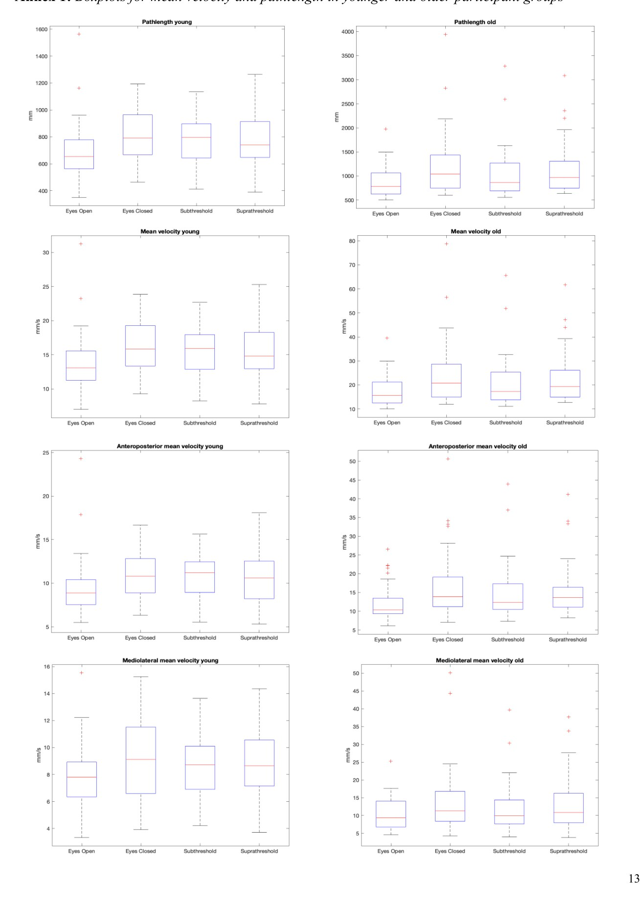

Auditory Noise Stimulation & Postural Stability
Signal processing and coherence analysis of EMG and force-plate data from 100 participants, quantifying how subthreshold auditory white noise stimulation affects neuromuscular control and fall risk in elderly individuals.
Background
Postural stability — the body's ability to keep its centre of mass within safe boundaries — depends on the integration of visual, vestibular, and somatosensory inputs. Falls are a leading cause of injury in elderly populations; reduced postural stability with age is a well-established risk factor.
A growing body of research suggests that stochastic resonance — the phenomenon whereby a subthreshold noise signal enhances the detection of weak sensory inputs — may improve postural control. Crucially, the effect is strongest when the noise is just below the sensory threshold (subthreshold), not above it (suprathreshold). Prior work had explored mechanical and vibratory noise applied to the soles of the feet; this project investigated whether auditory white noise produces the same stabilising effect.
A secondary question was whether older individuals — who have a lower baseline postural stability and therefore more room for improvement — benefit more than younger individuals.
Experiment & Methods
100 participants (50 elderly, 50 young) performed quiet standing under four conditions, each lasting one minute. Data was collected simultaneously from a force plate (CoP, centre of pressure) and surface EMG electrodes on 8 muscles per leg (16 channels total).
Signal processing pipeline (MATLAB):
EMG signals (≥3000 Hz) were trimmed to 50 seconds, artifact-interpolated using a spline method around peaks, filtered with a 50 Hz power-hum notch filter, and rectified via the Hilbert transform. Force plate CoP data was high-pass filtered (4th-order Butterworth, 20 Hz cut-off) and bias-corrected.
Linear CoP parameters extracted: mean velocity (radial, anteroposterior, mediolateral), pathlength, sway area, and ML peak velocity. Statistical testing: Friedman's test for overall condition effect; Wilcoxon signed rank sum test for pairwise comparisons.
Coherence analysis (magnitude squared coherence, MSC): EMG–EMG coherence between all muscle pairs, and CoP–EMG coherence between the CoP trajectory and each muscle. Coherence was analysed across delta, theta, alpha, and beta frequency bands to assess neuromuscular synchronisation under each condition.
Results
CoP analysis: In elderly participants, subthreshold noise significantly reduced radial, anteroposterior, and mediolateral mean velocity, as well as pathlength and ML peak velocity (all p < 0.02). The same reductions were present but statistically smaller and often non-significant in younger participants — consistent with the principle that individuals with a lower baseline stability have more room for improvement.
Coherence analysis: The eyes-closed condition produced the highest EMG–EMG and CoP–EMG coherence values; eyes-open the lowest. Subthreshold noise reduced coherence compared to eyes-closed in elderly participants — particularly in the M. Triceps Surae (Soleus, Gastrocnemius), which is consistent with the central role of the ankle plantarflexors in anteroposterior postural control.
Reduced coherence under subthreshold noise indicates decreased need for compensatory neuromuscular synchronisation — the body is more efficiently stabilised and requires less active muscular coordination to maintain balance. Suprathreshold noise produced notably weaker effects, confirming the role of stochastic resonance rather than simple auditory distraction.
Older participants showed generally higher baseline coherence values (delta and alpha bands more prominent), suggesting that increased muscular synchronisation is a hallmark of age-related compensation for reduced somatosensory acuity.
